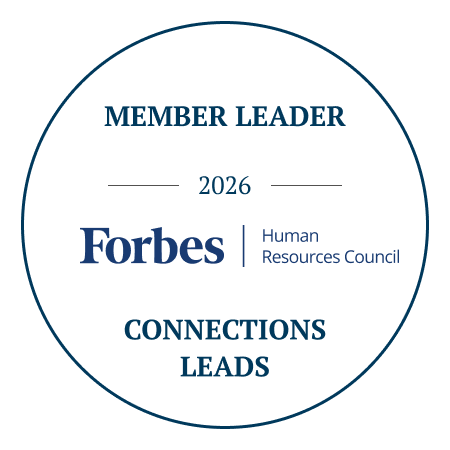

About Carroll Consulting
People Strategy With an Executive Perspective.
Carroll Consulting was created from a simple belief:
Growing companies shouldn’t have to wait until they have an HR crisis to build a strong people strategy.
Meet Imani Carroll
Imani Carroll
Founder & Principal Consultant
Imani Carroll is a strategic People & HR advisor with over a decade of People Leadership experience helping organizations build, scale, and strengthen their people infrastructure.
Through her consulting practice, Imani partners with founders, executives, and leadership teams on high-impact People initiatives spanning organizational strategy, talent and workforce planning, HR infrastructure, compliance, employee relations, organizational design, compensation, and leadership development. Her work is grounded in the belief that effective People strategy should be both business-aligned and practical; designed to support growth while reducing risk and creating an organization where people can perform at their best.
Imani has advised organizations through periods of rapid growth, organizational transformation, leadership change, and increased operational complexity. Her consulting portfolio includes supporting companies with multi-state and international HR strategy, employment practices and compliance, organizational design, talent strategy, executive and board preparation, workforce planning, and the development of scalable People programs and processes. She has also supported organizations navigating significant business milestones, including expansion, restructuring, and the transition from early-stage operations to more mature people practices.
Her approach combines strategic perspective with hands-on execution. Rather than applying a one-size-fits-all HR playbook, Imani works closely with leadership teams to understand the business, identify the highest-leverage opportunities, and build solutions that can actually be implemented and sustained.
Imani holds a Master’s degree in Sociology and a Bachelor’s degree in Psychology and is credentialed as both an SHRM-SCP and SPHR. She brings more than a decade of experience across strategic HR leadership, consulting, and organizational transformation to every engagement.
Her experience includes
Education & Credentials
Credentials That Support the Work.
Senior Professional in Human Resources — SPHR
Senior-level HR certification demonstrating advanced expertise across strategic and operational HR leadership.
Master of Arts — Sociology
Rutgers University
Bachelor of Science — Psychometrics & Quantitative Psychology
The Pennsylvania State University
Hacking HR
Founding Member
BennieHR
NYC HR Advisory Chapter Lead

Forbes Human Resources Council
Member Leader, Connections Leads (2026)
Why Carroll Consulting?
Because HR Shouldn’t Exist in a Silo.
The strongest people strategies are connected to the business.
- Hiring impacts revenue.
- Leadership impacts retention.
- Organizational design impacts productivity.
- Performance management impacts culture.
- Compliance impacts risk.
And every major business decision ultimately affects people.
After years of working alongside executive leaders and navigating complex organizational challenges, Imani created Carroll Consulting to bring that same level of strategic HR expertise to growing companies.
The goal isn’t to make HR more complicated. It’s to make people decisions smarter.
The Carroll Consulting Philosophy
How We Work.
People First.
Organizations are built by people. Strong businesses invest intentionally in the people who make them possible.
Business Minded.
HR strategy should connect directly to business objectives, financial realities, and organizational priorities.
Risk Aware.
Good people leadership requires understanding where workplace decisions can create organizational risk.
Practical.
The best strategy is useless if leadership can’t execute it. Our recommendations are designed to work in the real world.
Human.
Even the most complex workplace challenges ultimately involve people. We approach them with empathy, discretion, and sound judgment.
Beyond HR
Strategic People Leadership for What’s Next.
The future of work requires HR leaders who understand more than HR. It requires people leaders who understand business strategy, organizational risk, leadership, data, culture, and change.
That’s the perspective Carroll Consulting brings to every engagement.
People. Risk. Strategy.
Ready to talk?
Work With an Executive Perspective.
Carroll Consulting brings the perspective of an experienced HR executive together with the flexibility of a boutique advisory firm.